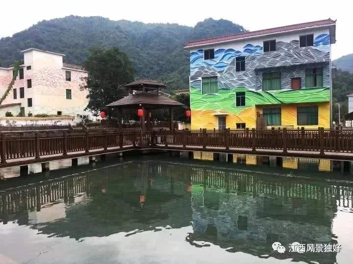

旅游信息
玩转江西
景点攻略
热门活动
万寿朝仙会是南昌地区最为隆重的庙会之一，已经有一千多年的历史，一般在每年的农历八月至十月举行。万寿朝仙会也叫敬香会，是奉祀许逊的庙会。在南昌地区最受人崇拜的是许逊，民间叫他为福主菩萨。
天香园旅游文化节自2006年起，每年九月至十月在南昌市青山湖区举办。天香园景区作为全国最大的城市候鸟景区，素有“鸟的天堂、人的乐园、美的空间”之誉。
景德镇国际陶瓷博览会是中华人民共和国的景德镇官方用以展示景德镇瓷器产品及宣传景德镇陶瓷文化而定期举办的一种商贸活动。第一届博览会于2004年10月举办。一般被认为，景德镇举办国际陶瓷博览会的主要目的是官方的招商引资。
《中国红歌会》是江西卫视2006年为纪念长征胜利70周年全国首创推出的大型原创活动，是连续五年获得全国唯一晚间黄金档播出的选秀节目，也是中国电视史上持续七年制作的电视栏目。“红歌”主要是并非仅指红色经典革命歌曲，每个时代健康、积极向上的进步歌曲，包括世界各国革命经典歌曲。
旅途美照
